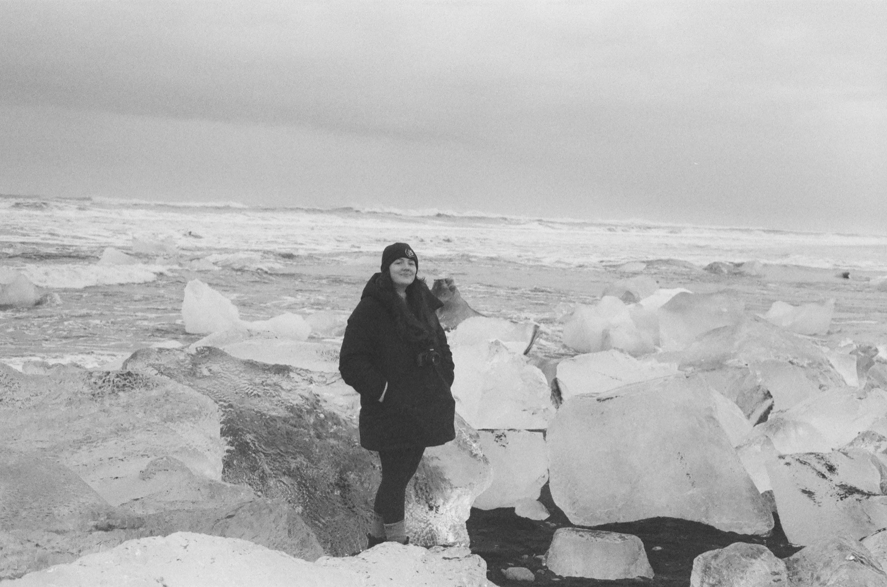

Current field note · 2026
Software at Effigy Analytics.
Effigy Analytics is a two-person software studio. We are building shared interface foundations, awards-season tools, games, and a set of tools for home operations.
See what is taking shape ↓Cloud Engineering · Software Development · Film Photography
I’m a Lead, Cloud Engineer at Prudential Financial. Outside work, I build software with Effigy Analytics.

Current field note · 2026
Effigy Analytics is a two-person software studio. We are building shared interface foundations, awards-season tools, games, and a set of tools for home operations.
See what is taking shape ↓Selected work
01 / open-source interface system
Public · v0.9A typed React interface foundation for dense, operational products. It packages layout, form, navigation, and accessibility decisions so Effigy applications can spend their time on product problems.
02 / predictions application
Pilot · release workPredictions, personal ballots, and leaderboards for awards-season groups. The product separates what someone expects to win from what they actually want to win—and makes the difference part of the fun.
Elsewhere on the bench
Three games—Deposition, Scry, and Notation—are moving toward public screenshots. Webbery, a set of tools for home operations, follows behind them.
See what comes next →Selected photographs
At work
I am currently a Lead, Cloud Engineer at Prudential Financial, Inc., working on the platforms, automation, and operating practices behind modern cloud delivery.
Professional background →About
Engineer, photographer, intermittent writer, and movie watcher. Based in North Jersey and elsewhere when possible. I earned a B.S. in Computer Science and Innovation from Champlain College, with a specialization in Software Engineering and a minor in Mathematics.